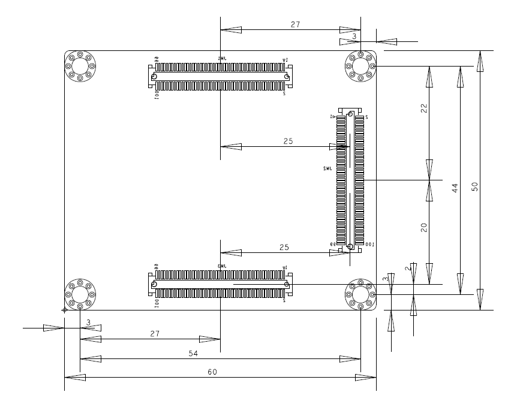

XME0712 Reference Manual
Development Environment:
Vivado 2018.3 is from Xilinx website
WeChat Public Number:

●1. Overview
XME0712 is a industrial-grade system module based on Xilinx Artix-7 series launched by Microphase Technology, which integrates XC7A35T/75T/200T FPGA chip, DDR3 RAM, 16MByte QSPI flash, Gigabit Ethernet PHY transceiver and power management, a large amount of configurable I/O is extended with high-speed connectors. With a module size of only 5 x 6cm and a very competitive price, it is ideal for integration into customers’ products. All microphase technology core modules measuring 5 x 6 cm are mechanically compatible
○Board Layout

○Key Features
Xilinx Artix-7 XC7A35T-2FGG484,
Xilinx Artix-7 XC7A100T-2FGG484,
Xilinx Artix-7 XC7A200T-2FBG484.
DDR3: 8Gbit, DDR3 (MT41K256M16TW-107 IT:P).
LED: 1 Power LED,1 FPGA Done LED, 1 user’s LED,
Flash: 128Mbit QSPI Flash.
Giga ETH: 10/100/1000M Adaptive.
CLOCK: 2 active differential clock.
○Block diagram

○Mechanical Spec

●2. Function Resources
○FPGA
Logic Cells: 33,280(35T)
101,440(100T)
215,360(200T)
Slices: 5,200(35T)
15,850(100T)
33,650(200T)
CLB Flip-Flops: 41,600(35T)
126,800(100T)
269,200(200T)Maximum Distributed RAM(Kb): 400(35T)
1,188(100T)
2,888(200T)
Block RAM/FIFO w/ ECC (36 Kb each): 50(35T)
135(100T)
365(200T)
Total Block RAM (Kb): 1,800(35T)
4,860(100T)
13,140(200T)
CMTs (1 MMCM + 1 PLL): 5(35T)
6(100T)
10(200T)Maximum Single-Ended I/O:250(35T)
300(100T)
500(200T)
Maximum Differential I/O Pairs: 120(35T)
144(100T)
240(200T)
DSP Slices: 90(35T)
240(100T)
740(200T)
PCIe® Gen2: 1
Analog Mixed Signal (AMS) / XADC: 1
Configuration AES / HMAC Blocks: 1
GTP Transceivers (6.6 Gb/s Max Rate): 4(35T)
8(100T)
16(200T)
○DDR3
The module uses 2 16-bit DDR3 memory chips. The capacity of a single DDR3 chip is 4Gbit, the two pieces are 8Gbit, and the bit width is 32 bits. The DDR3 RAM model is MT41K256M16TW-107 IT:P, compatible with MT41K256M16HA-125. DDR3 SDRAM has a maximum operating clock speed of 400MHz(data rate of 800Mbps), and the DDR3 chip is connected to the IO of the FPGA’s BANK 34 and BANK35.
| Signal Name | Pin Number | Signal Name | Pin Number |
|---|---|---|---|
| DDR3_A0 | R3 | DDR3_D9 | H2 |
| DDR3_A1 | Y6 | DDR3_D10 | J5 |
| DDR3_A2 | U6 | DDR3_D11 | G2 |
| DDR3_A3 | R6 | DDR3_D12 | H3 |
| DDR3_A4 | AA5 | DDR3_D13 | H5 |
| DDR3_A5 | T6 | DDR3_D14 | J1 |
| DDR3_A6 | Y2 | DDR3_D15 | G3 |
| DDR3_A7 | W2 | DDR3_D16 | L3 |
| DDR3_A8 | AB2 | DDR3_D17 | K6 |
| DDR3_A9 | W1 | DDR3_D18 | K3 |
| DDR3_A10 | W6 | DDR3_D19 | M3 |
| DDR3_A11 | AB5 | DDR3_D20 | J4 |
| DDR3_A12 | W5 | DDR3_D21 | M2 |
| DDR3_A13 | V5 | DDR3_D22 | J6 |
| DDR3_A14 | AB1 | DDR3_D23 | K4 |
| DDR3_BA0 | R2 | DDR3_D24 | P1 |
| DDR3_BA1 | AB3 | DDR3_D25 | N4 |
| DDR3_BA2 | U3 | DDR3_D26 | P6 |
| DDR3_NCAS | U1 | DDR3_D27 | M6 |
| DDR3_CKE | AA1 | DDR3_D28 | R1 |
| DDR3_CLK_N | AA3 | DDR3_D29 | M5 |
| DDR3_CLK_P | Y3 | DDR3_D30 | P2 |
| DDR3_NCS | V3 | DDR3_D31 | N2 |
| DDR3_DM0 | F3 | DDR3_ODT | U2 |
| DDR3_DM1 | H4 | DDR3_NRAS | V2 |
| DDR3_DM2 | L5 | DDR3_NWE | T1 |
| DDR3_DM3 | N5 | DDR3_DQS_N0 | D1 |
| DDR3_D0 | C2 | DDR3_DQS_N1 | J2 |
| DDR3_D1 | E2 | DDR3_DQS_N2 | L1 |
| DDR3_D2 | B2 | DDR3_DQS_N3 | P4 |
| DDR3_D3 | F1 | DDR3_DQS_P0 | E1 |
| DDR3_D4 | B1 | DDR3_DQS_P1 | K2 |
| DDR3_D5 | G1 | DDR3_DQS_P2 | M1 |
| DDR3_D6 | A1 | DDR3_DQS_P3 | P5 |
| DDR3_D7 | D2 | DDR3_NRST | Y1 |
| DDR3_D8 | K1 |
○Giga ETH
XME0712 integrates a REALTEK REL8211FI Gigabit Ethernet PHY chip, users can easily use it to achieve Ethernet-related applications, Ethernet PHY chip connected to FPGA Bank13, because Bank13 in XC7A35T-FGG484 is empty, so the XME0712-35T modules do not support Ethernet functions.
The Ethernet PHY is connected to the FPGA through the RGMII interface, and the FPGA can read and write the register of the PHY chip through the MDIO network port management interface. The MDI sends and receives signals connected to the B2B connector JM3. The user only needs to connect these signals to the RJ45 connector to complete the design of the network port.
| Signal Name | FPGA PIN | Explain |
|---|---|---|
| ETH0_NRST | Y17 | Reset signal |
| ETH0_TXCK | Y11 | RGMII TX CLK |
| ETH0_TXCTL | AB11 | RGMII TX Control Single |
| ETH0_TXD0 | AB12 | RGMII Tx Date 0 |
| ETH0_TXD1 | AA9 | RGMII Tx Date 1 |
| ETH0_TXD2 | AB10 | RGMII Tx Date 2 |
| ETH0_TXD3 | AA10 | RGMII Tx Date 3 |
| ETH0_RXCK | W11 | RGMII Rx CLK |
| ETH0_RXCTL | AA11 | RGMII RX Control Single |
| ETH0_RXD0 | V10 | RGMII Rx Date 0 |
| ETH0_RXD1 | W10 | RGMII Rx Date 0 |
| ETH0_RXD2 | Y12 | RGMII Rx Date 0 |
| ETH0_RXD3 | W12 | RGMII Rx Date 0 |
| ETH0_MDC | AA13 | Management Interface Clock |
| ETH0_MDIO | AB13 | Management Interface Date |
○Watchdog Reset
RESET_N low level is effective, the Reset signal from the carrier board, the reset signal through the power supply and reset monitoring chip output signal to the FPGA pin, when the POR_nRST is low, it means that there is a reset signal or the 3.3V power supply is lower than 2.93V, if the reset signal is not used, it can be suspended.
○JTAG
The FPGA’s JTAG signals are connected to the expansion port, which also provides a 3.3V JTAG VREF voltage output signal
| Signal Name | JM3 Pin Number | Explain |
|---|---|---|
| VCC_3V3 | Pin11,13 | Module voltage output, JTAG reference voltage |
| FPGA_TDI | Pin21 | Input |
| FPGA_TDO | Pin17 | Output |
| FPGA_TCK | Pin15 | Input |
| FPGA_TMS | Pin23 | Input |
| GND | --- | Connect to the GND signal on the module |
○Quad-SPI Flash
On-board 128M Quad-SPI Flash memory IS25LP128F-JBLE-TR is used to store initial FPGA configuration and user’s application as well as data.
| Position | Model | Capacity | Factory |
|---|---|---|---|
| U21 | IS25LP128F-JBLE-TR | 128 Byte | ISSI |
○Clock
The XME0712 core board provides two active differential clocks. One of them, a 200 MHz clock, is connected to the clock pins of Bank 34 and can be used as the FPGA’s logic clock and the control clock for DDR3. The other, a 125 MHz clock, is connected to Bank 216 and serves as the reference input clock for the GTP transceivers.
The 200M differential clock input assignments are shown in the table below:
| Signal Name | FPGA Pin | Explain |
|---|---|---|
| SYS_CLK_P | V4 | Differential clock P |
| SYS_CLK_N | W4 | Differential clock N |
The 125M differential clock input assignments are shown in the table below:
| Signal Name | FPGA Pin | Explain |
|---|---|---|
| MGT_CLK1_P | F10 | Differential clock P |
| MGT_CLK1_N | E10 | Differential clock N |
○Power
Please note that the power input of XME0712 is 4.5~17V. We therefore recommend using a 12V power supply.
Once the module is powered up, it will be cascaded in order to complete the power-up process in the following sequence: 1.0V -> 1.8V -> 1.5V -> 3.3V. The 3.3V output will be powered up last, and at the same time, it will provide the PG signal of system power status.
○LED
The XME0712 board includes three LEDs: a power indicator, an FPGA configuration status light and a PL-controlled user LED.
The LED signals are described in the following table.
| LED | FPGA Pin | Note |
|---|---|---|
| D4 | -- | Power LED |
| D1 | G11 | FPGA configuration status LED, lit after successful FPGA configuration |
| D3 | T16 | LED on when FPGA T16 output is high |
○Expansion Ports
The XME0712 uses three sets of connectors, JM1, JM2 and JM3, for the FPGA IO signals and Ethernet interface.
3 x AXK600337YG, 100Pin, 0.5mm Pitch
| Core Board Connector Models | Based Board Connector Models | Manufacturers | Mated height |
|---|---|---|---|
| AXK600337YG | AXK500137YG | Panasonic | 3mm |
Description:
Bank15 IO level depends on JM1 Pin11,13 voltage input, input range 1.2V-3.3V.
Bank16 IO level depends on JM2 Pin91,93 voltage input, input range 1.2V-3.3V.
Bank13,14 are 3.3V.
Please refer to the ‘XME0712_Pinout_Table_R12’ for detailed pin definitions of the XME0712 and its carrier board.